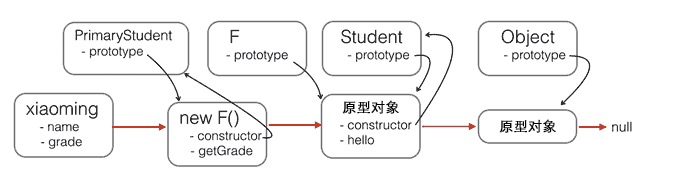

function Student(props) {
this.name = props.name || 'Unnamed';
}
Student.prototype.hello = function () {
console.log('Hello, ' + this.name + '!');
}
现在，我们要基于Student扩展出PrimaryStudent，可以先定义出PrimaryStudent：
function PrimaryStudent(props) {
// 调用Student构造函数，绑定this变量:
Student.call(this, props);
this.grade = props.grade || 1;
}
但是，调用了Student构造函数不等于继承了Student，PrimaryStudent创建的对象的原型是：
new PrimaryStudent() ----> PrimaryStudent.prototype ----> Object.prototype ----> null
必须想办法把原型链修改为：new PrimaryStudent() ----> PrimaryStudent.prototype ----> Student.prototype ----> Object.prototype ----> null
这样，原型链对了，继承关系就对了。新的基于PrimaryStudent创建的对象不但能调用PrimaryStudent.prototype定义的方法，也可以调用Student.prototype定义的方法。
如果你想用最简单粗暴的方法这么干：PrimaryStudent.prototype = Student.prototype;
是不行的！如果这样的话，PrimaryStudent和Student共享一个原型对象，那还要定义PrimaryStudent干啥？
我们必须借助一个中间对象来实现正确的原型链，这个中间对象的原型要指向Student.prototype。为了实现这一点，参考道爷（就是发明JSON的那个道格拉斯）的代码，中间对象可以用一个空函数F来实现：
// PrimaryStudent构造函数:
function PrimaryStudent(props) {
Student.call(this, props);
this.grade = props.grade || 1;
}
// 空函数F:
function F() {
}
// 把F的原型指向Student.prototype:
F.prototype = Student.prototype;
// 把PrimaryStudent的原型指向一个新的F对象，F对象的原型正好指向Student.prototype:
PrimaryStudent.prototype = new F();
// 把PrimaryStudent原型的构造函数修复为PrimaryStudent:
PrimaryStudent.prototype.constructor = PrimaryStudent;
// 继续在PrimaryStudent原型（就是new F()对象）上定义方法：
PrimaryStudent.prototype.getGrade = function () {
return this.grade;
};
// 创建xiaoming:
var xiaoming = new PrimaryStudent({
name: '小明',
grade: 2
});
xiaoming.name; // '小明'
xiaoming.grade; // 2
// 验证原型:
xiaoming.__proto__ === PrimaryStudent.prototype; // true
xiaoming.__proto__.__proto__ === Student.prototype; // true
// 验证继承关系:
xiaoming instanceof PrimaryStudent; // true
xiaoming instanceof Student; // true

注意，函数F仅用于桥接，我们仅创建了一个new F()实例，而且，没有改变原有的Student定义的原型链。
如果把继承这个动作用一个inherits()函数封装起来，还可以隐藏F的定义，并简化代码：
function inherits(Child, Parent) {
var F = function () {};
F.prototype = Parent.prototype;
Child.prototype = new F();
Child.prototype.constructor = Child;
}